複数 before / after candidate rank の再現性確認
これは候補rankの探索的比較です。rankを承認済みペアへ昇格する処理ではありません。 画像上の記述指標であり、乾燥・シワの診断、物理的なシワ深さ、メイク効果の因果推定ではありません。 各候補は必ず画像を目視し、表情・照明・ピント・圧縮・手や道具の影響を確認してください。
候補再生成: diversity 3.0秒 ／ 最大 80件 ／ 品質条件通過 281組。 顔サイズ・手重なりの閾値は変更していません。
rank横断の主要差分
値は after - before。正負の方向がrank間で再現するかを確認します。
| rank | before → after | 画面左眉下の皮膚の細かな質感コントラスト（中央値） | 画面左眉下の皮膚の細かな質感コントラスト（p90） | 画面右眉下の皮膚の細かな質感コントラスト（中央値） | 画面右眉下の皮膚の細かな質感コントラスト（p90） | 画面左ほうれい線候補の周囲皮膚比・暗さコントラスト（p90） | 画面右ほうれい線候補の周囲皮膚比・暗さコントラスト（p90） |
|---|---|---|---|---|---|---|---|
| 1 | 240.99s → 1403.49s | +0.766 | +2.449 | +0.596 | +2.265 | +4.177 | -7.371 |
| 2 | 223.01s → 1403.49s | +0.732 | +2.490 | +0.581 | +2.292 | +5.677 | -9.591 |
| 3 | 222.51s → 1410.99s | +0.235 | +2.452 | +0.179 | +0.934 | +5.631 | -9.976 |
| 4 | 215.51s → 1403.49s | +0.547 | +1.664 | +0.452 | +1.637 | +5.516 | -9.726 |
| 5 | 216.01s → 1408.99s | -0.073 | -0.035 | -0.070 | -0.161 | +5.729 | -5.955 |
| 6 | 229.02s → 1403.49s | +0.790 | +2.706 | +0.599 | +2.358 | +6.201 | -6.458 |
| 7 | 237.99s → 1403.49s | +0.628 | +2.355 | +0.541 | +2.090 | +2.928 | -13.011 |
| 8 | 212.50s → 1403.49s | +0.673 | +2.215 | +0.582 | +2.254 | +3.178 | -6.682 |
| 9 | 216.01s → 1412.99s | -0.044 | +0.199 | -0.111 | -0.493 | +5.877 | -5.547 |
| 10 | 229.98s → 1410.99s | +0.211 | +2.539 | +0.161 | +0.845 | +6.189 | -6.834 |
| 11 | 212.50s → 1406.99s | +0.088 | +1.301 | +0.331 | +1.315 | +4.140 | -6.418 |
| 12 | 229.02s → 1406.99s | +0.206 | +1.792 | +0.348 | +1.418 | +7.163 | -6.194 |
| 13 | 222.51s → 1406.99s | +0.139 | +1.451 | +0.315 | +1.056 | +6.655 | -9.202 |
| 14 | 212.50s → 1410.99s | +0.184 | +2.302 | +0.195 | +1.193 | +3.115 | -7.192 |
| 15 | 240.99s → 1410.99s | +0.277 | +2.537 | +0.209 | +1.204 | +4.114 | -7.881 |
| 16 | 226.02s → 1410.99s | +0.280 | +2.570 | +0.188 | +1.211 | +5.344 | -4.681 |
| 17 | 236.99s → 1410.99s | +0.212 | +2.237 | +0.146 | +0.952 | +3.713 | -7.177 |
| 18 | 240.99s → 1406.99s | +0.181 | +1.536 | +0.345 | +1.326 | +5.139 | -7.107 |
| 19 | 226.02s → 1404.99s | +0.912 | +4.499 | +0.772 | +4.257 | +5.797 | -5.219 |
| 20 | 236.99s → 1406.99s | +0.116 | +1.236 | +0.283 | +1.073 | +4.737 | -6.403 |
眉下の皮膚の質感・ほうれい線候補 / rank 1
score 0.9303 ／ before 240.99s → after 1403.49s
顔サイズ比 1.0031 ／ 手の重なり before 0.00% / after 0.00%


| 指標 | 単位 | before | after | 差 | 状態 |
|---|---|---|---|---|---|
| 画面左眉下の皮膚の細かな質感コントラスト（中央値） | 局所L*比 % | 0.201 | 0.966 | +0.766 | ok |
| 画面左眉下の皮膚の細かな質感コントラスト（p90） | 局所L*比 % | 0.783 | 3.232 | +2.449 | ok |
| 画面右眉下の皮膚の細かな質感コントラスト（中央値） | 局所L*比 % | 0.145 | 0.742 | +0.596 | ok |
| 画面右眉下の皮膚の細かな質感コントラスト（p90） | 局所L*比 % | 0.489 | 2.754 | +2.265 | ok |
| 画面左頬の細かな質感コントラスト（中央値・対照） | 局所L*比 % | 0.138 | 0.257 | +0.118 | ok |
| 画面左頬の細かな質感コントラスト（p90・対照） | 局所L*比 % | 0.356 | 0.901 | +0.545 | ok |
| 画面右頬の細かな質感コントラスト（中央値・対照） | 局所L*比 % | 0.120 | 0.194 | +0.074 | ok |
| 画面右頬の細かな質感コントラスト（p90・対照） | 局所L*比 % | 0.316 | 0.594 | +0.278 | ok |
| 額の細かな質感コントラスト（中央値・対照） | 局所L*比 % | 0.048 | 0.085 | +0.037 | ok |
| 額の細かな質感コントラスト（p90・対照） | 局所L*比 % | 0.192 | 0.313 | +0.121 | ok |
| 画面左眉下の皮膚のSEsc-inspired bright-scaliness率 | % | 0.000 | 0.000 | +0.000 | ok |
| 画面右眉下の皮膚のSEsc-inspired bright-scaliness率 | % | 0.000 | 0.000 | +0.000 | ok |
| 画面左頬・対照のSEsc-inspired bright-scaliness率 | % | 0.000 | 0.000 | +0.000 | ok |
| 画面右頬・対照のSEsc-inspired bright-scaliness率 | % | 0.000 | 0.000 | +0.000 | ok |
| 額・対照のSEsc-inspired bright-scaliness率 | % | 0.000 | 0.000 | +0.000 | ok |
| 画面左眉下の皮膚のGVR-inspired皮膚水分反射比 | ratio | 2.851e-07 | 7.264e-07 | +4.413e-07 | ok |
| 画面右眉下の皮膚のGVR-inspired皮膚水分反射比 | ratio | 1.378e-08 | 8.286e-07 | +8.148e-07 | ok |
| 画面左頬・対照のGVR-inspired皮膚水分反射比 | ratio | 1.470e-06 | 3.931e-07 | -1.077e-06 | ok |
| 画面右頬・対照のGVR-inspired皮膚水分反射比 | ratio | 5.976e-07 | 1.423e-07 | -4.554e-07 | ok |
| 額・対照のGVR-inspired皮膚水分反射比 | ratio | 1.993e-07 | 0.000 | -1.993e-07 | ok |
| 画面左ほうれい線候補の周囲皮膚比・暗さコントラスト（中央値） | 局所L*比 % | 0.000 | 0.000 | +0.000 | ok |
| 画面左ほうれい線候補の周囲皮膚比・暗さコントラスト（p90） | 局所L*比 % | 5.067 | 9.244 | +4.177 | ok |
| 画面右ほうれい線候補の周囲皮膚比・暗さコントラスト（中央値） | 局所L*比 % | 0.000 | 0.000 | +0.000 | ok |
| 画面右ほうれい線候補の周囲皮膚比・暗さコントラスト（p90） | 局所L*比 % | 10.190 | 2.819 | -7.371 | ok |
眉下の皮膚の質感・ほうれい線候補 / rank 2
score 0.9495 ／ before 223.01s → after 1403.49s
顔サイズ比 1.0003 ／ 手の重なり before 0.00% / after 0.00%
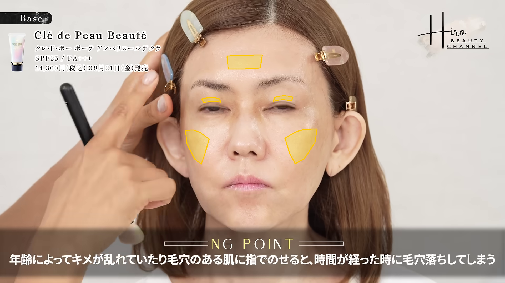

| 指標 | 単位 | before | after | 差 | 状態 |
|---|---|---|---|---|---|
| 画面左眉下の皮膚の細かな質感コントラスト（中央値） | 局所L*比 % | 0.235 | 0.966 | +0.732 | ok |
| 画面左眉下の皮膚の細かな質感コントラスト（p90） | 局所L*比 % | 0.742 | 3.232 | +2.490 | ok |
| 画面右眉下の皮膚の細かな質感コントラスト（中央値） | 局所L*比 % | 0.161 | 0.742 | +0.581 | ok |
| 画面右眉下の皮膚の細かな質感コントラスト（p90） | 局所L*比 % | 0.463 | 2.754 | +2.292 | ok |
| 画面左頬の細かな質感コントラスト（中央値・対照） | 局所L*比 % | 0.178 | 0.257 | +0.079 | ok |
| 画面左頬の細かな質感コントラスト（p90・対照） | 局所L*比 % | 0.605 | 0.901 | +0.296 | ok |
| 画面右頬の細かな質感コントラスト（中央値・対照） | 局所L*比 % | 0.167 | 0.194 | +0.026 | ok |
| 画面右頬の細かな質感コントラスト（p90・対照） | 局所L*比 % | 0.454 | 0.594 | +0.140 | ok |
| 額の細かな質感コントラスト（中央値・対照） | 局所L*比 % | 0.089 | 0.085 | -0.004 | ok |
| 額の細かな質感コントラスト（p90・対照） | 局所L*比 % | 0.373 | 0.313 | -0.060 | ok |
| 画面左眉下の皮膚のSEsc-inspired bright-scaliness率 | % | 0.000 | 0.000 | +0.000 | ok |
| 画面右眉下の皮膚のSEsc-inspired bright-scaliness率 | % | 0.000 | 0.000 | +0.000 | ok |
| 画面左頬・対照のSEsc-inspired bright-scaliness率 | % | 0.000 | 0.000 | +0.000 | ok |
| 画面右頬・対照のSEsc-inspired bright-scaliness率 | % | 0.000 | 0.000 | +0.000 | ok |
| 額・対照のSEsc-inspired bright-scaliness率 | % | 0.000 | 0.000 | +0.000 | ok |
| 画面左眉下の皮膚のGVR-inspired皮膚水分反射比 | ratio | 1.823e-06 | 7.264e-07 | -1.096e-06 | ok |
| 画面右眉下の皮膚のGVR-inspired皮膚水分反射比 | ratio | 5.747e-07 | 8.286e-07 | +2.539e-07 | ok |
| 画面左頬・対照のGVR-inspired皮膚水分反射比 | ratio | 2.129e-07 | 3.931e-07 | +1.802e-07 | ok |
| 画面右頬・対照のGVR-inspired皮膚水分反射比 | ratio | 7.037e-07 | 1.423e-07 | -5.615e-07 | ok |
| 額・対照のGVR-inspired皮膚水分反射比 | ratio | 3.139e-09 | 0.000 | -3.139e-09 | ok |
| 画面左ほうれい線候補の周囲皮膚比・暗さコントラスト（中央値） | 局所L*比 % | 0.000 | 0.000 | +0.000 | ok |
| 画面左ほうれい線候補の周囲皮膚比・暗さコントラスト（p90） | 局所L*比 % | 3.567 | 9.244 | +5.677 | ok |
| 画面右ほうれい線候補の周囲皮膚比・暗さコントラスト（中央値） | 局所L*比 % | 0.000 | 0.000 | +0.000 | ok |
| 画面右ほうれい線候補の周囲皮膚比・暗さコントラスト（p90） | 局所L*比 % | 12.410 | 2.819 | -9.591 | ok |
眉下の皮膚の質感・ほうれい線候補 / rank 3
score 1.1004 ／ before 222.51s → after 1410.99s
顔サイズ比 1.0136 ／ 手の重なり before 0.00% / after 0.00%


| 指標 | 単位 | before | after | 差 | 状態 |
|---|---|---|---|---|---|
| 画面左眉下の皮膚の細かな質感コントラスト（中央値） | 局所L*比 % | 0.242 | 0.477 | +0.235 | ok |
| 画面左眉下の皮膚の細かな質感コントラスト（p90） | 局所L*比 % | 0.868 | 3.320 | +2.452 | ok |
| 画面右眉下の皮膚の細かな質感コントラスト（中央値） | 局所L*比 % | 0.176 | 0.354 | +0.179 | ok |
| 画面右眉下の皮膚の細かな質感コントラスト（p90） | 局所L*比 % | 0.759 | 1.694 | +0.934 | ok |
| 画面左頬の細かな質感コントラスト（中央値・対照） | 局所L*比 % | 0.166 | 0.185 | +0.019 | ok |
| 画面左頬の細かな質感コントラスト（p90・対照） | 局所L*比 % | 0.517 | 0.562 | +0.046 | ok |
| 画面右頬の細かな質感コントラスト（中央値・対照） | 局所L*比 % | 0.140 | 0.119 | -0.021 | ok |
| 画面右頬の細かな質感コントラスト（p90・対照） | 局所L*比 % | 0.409 | 0.351 | -0.058 | ok |
| 額の細かな質感コントラスト（中央値・対照） | 局所L*比 % | 0.086 | 0.072 | -0.014 | ok |
| 額の細かな質感コントラスト（p90・対照） | 局所L*比 % | 0.344 | 0.250 | -0.095 | ok |
| 画面左眉下の皮膚のSEsc-inspired bright-scaliness率 | % | 0.000 | 0.000 | +0.000 | ok |
| 画面右眉下の皮膚のSEsc-inspired bright-scaliness率 | % | 0.000 | 0.000 | +0.000 | ok |
| 画面左頬・対照のSEsc-inspired bright-scaliness率 | % | 0.000 | 0.000 | +0.000 | ok |
| 画面右頬・対照のSEsc-inspired bright-scaliness率 | % | 0.000 | 0.000 | +0.000 | ok |
| 額・対照のSEsc-inspired bright-scaliness率 | % | 0.000 | 0.000 | +0.000 | ok |
| 画面左眉下の皮膚のGVR-inspired皮膚水分反射比 | ratio | 1.446e-06 | 1.534e-07 | -1.293e-06 | ok |
| 画面右眉下の皮膚のGVR-inspired皮膚水分反射比 | ratio | 6.727e-07 | 1.964e-07 | -4.763e-07 | ok |
| 画面左頬・対照のGVR-inspired皮膚水分反射比 | ratio | 9.685e-07 | 6.652e-07 | -3.033e-07 | ok |
| 画面右頬・対照のGVR-inspired皮膚水分反射比 | ratio | 6.171e-07 | 1.611e-07 | -4.560e-07 | ok |
| 額・対照のGVR-inspired皮膚水分反射比 | ratio | 7.292e-09 | 0.000 | -7.292e-09 | ok |
| 画面左ほうれい線候補の周囲皮膚比・暗さコントラスト（中央値） | 局所L*比 % | 0.000 | 0.000 | +0.000 | ok |
| 画面左ほうれい線候補の周囲皮膚比・暗さコントラスト（p90） | 局所L*比 % | 3.550 | 9.181 | +5.631 | ok |
| 画面右ほうれい線候補の周囲皮膚比・暗さコントラスト（中央値） | 局所L*比 % | 0.000 | 0.000 | +0.000 | ok |
| 画面右ほうれい線候補の周囲皮膚比・暗さコントラスト（p90） | 局所L*比 % | 12.285 | 2.309 | -9.976 | ok |
眉下の皮膚の質感・ほうれい線候補 / rank 4
score 1.1408 ／ before 215.51s → after 1403.49s
顔サイズ比 1.0010 ／ 手の重なり before 0.00% / after 0.00%
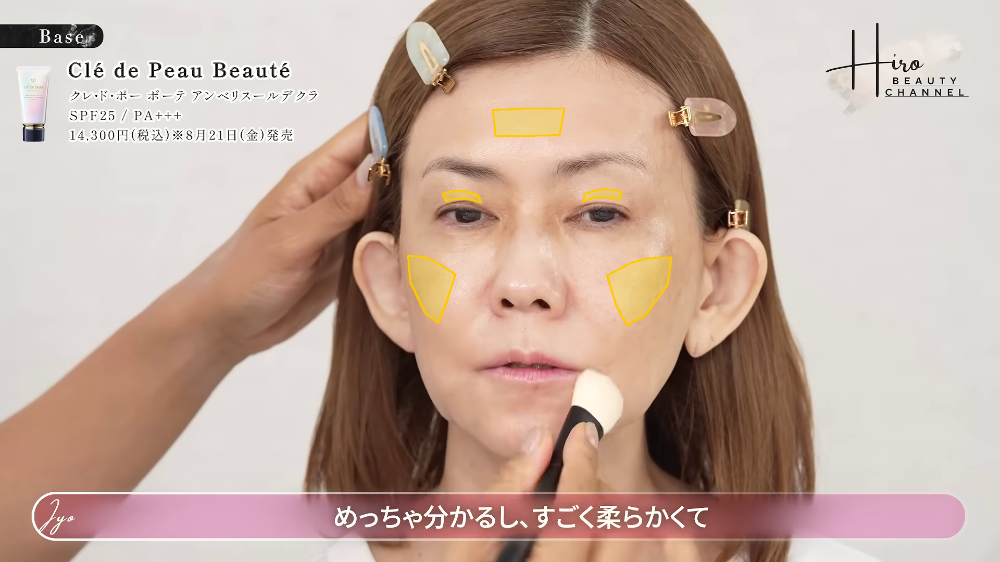

| 指標 | 単位 | before | after | 差 | 状態 |
|---|---|---|---|---|---|
| 画面左眉下の皮膚の細かな質感コントラスト（中央値） | 局所L*比 % | 0.419 | 0.966 | +0.547 | ok |
| 画面左眉下の皮膚の細かな質感コントラスト（p90） | 局所L*比 % | 1.568 | 3.232 | +1.664 | ok |
| 画面右眉下の皮膚の細かな質感コントラスト（中央値） | 局所L*比 % | 0.290 | 0.742 | +0.452 | ok |
| 画面右眉下の皮膚の細かな質感コントラスト（p90） | 局所L*比 % | 1.117 | 2.754 | +1.637 | ok |
| 画面左頬の細かな質感コントラスト（中央値・対照） | 局所L*比 % | 0.167 | 0.257 | +0.090 | ok |
| 画面左頬の細かな質感コントラスト（p90・対照） | 局所L*比 % | 0.497 | 0.901 | +0.404 | ok |
| 画面右頬の細かな質感コントラスト（中央値・対照） | 局所L*比 % | 0.181 | 0.194 | +0.013 | ok |
| 画面右頬の細かな質感コントラスト（p90・対照） | 局所L*比 % | 0.512 | 0.594 | +0.082 | ok |
| 額の細かな質感コントラスト（中央値・対照） | 局所L*比 % | 0.044 | 0.085 | +0.040 | ok |
| 額の細かな質感コントラスト（p90・対照） | 局所L*比 % | 0.262 | 0.313 | +0.051 | ok |
| 画面左眉下の皮膚のSEsc-inspired bright-scaliness率 | % | 0.000 | 0.000 | +0.000 | ok |
| 画面右眉下の皮膚のSEsc-inspired bright-scaliness率 | % | 0.000 | 0.000 | +0.000 | ok |
| 画面左頬・対照のSEsc-inspired bright-scaliness率 | % | 0.000 | 0.000 | +0.000 | ok |
| 画面右頬・対照のSEsc-inspired bright-scaliness率 | % | 0.000 | 0.000 | +0.000 | ok |
| 額・対照のSEsc-inspired bright-scaliness率 | % | 0.000 | 0.000 | +0.000 | ok |
| 画面左眉下の皮膚のGVR-inspired皮膚水分反射比 | ratio | 6.226e-07 | 7.264e-07 | +1.038e-07 | ok |
| 画面右眉下の皮膚のGVR-inspired皮膚水分反射比 | ratio | 2.451e-07 | 8.286e-07 | +5.835e-07 | ok |
| 画面左頬・対照のGVR-inspired皮膚水分反射比 | ratio | 8.516e-07 | 3.931e-07 | -4.586e-07 | ok |
| 画面右頬・対照のGVR-inspired皮膚水分反射比 | ratio | 5.171e-07 | 1.423e-07 | -3.748e-07 | ok |
| 額・対照のGVR-inspired皮膚水分反射比 | ratio | 9.565e-08 | 0.000 | -9.565e-08 | ok |
| 画面左ほうれい線候補の周囲皮膚比・暗さコントラスト（中央値） | 局所L*比 % | 0.000 | 0.000 | +0.000 | ok |
| 画面左ほうれい線候補の周囲皮膚比・暗さコントラスト（p90） | 局所L*比 % | 3.728 | 9.244 | +5.516 | ok |
| 画面右ほうれい線候補の周囲皮膚比・暗さコントラスト（中央値） | 局所L*比 % | 0.000 | 0.000 | +0.000 | ok |
| 画面右ほうれい線候補の周囲皮膚比・暗さコントラスト（p90） | 局所L*比 % | 12.545 | 2.819 | -9.726 | ok |
眉下の皮膚の質感・ほうれい線候補 / rank 5
score 1.1850 ／ before 216.01s → after 1408.99s
顔サイズ比 1.0123 ／ 手の重なり before 0.00% / after 0.00%

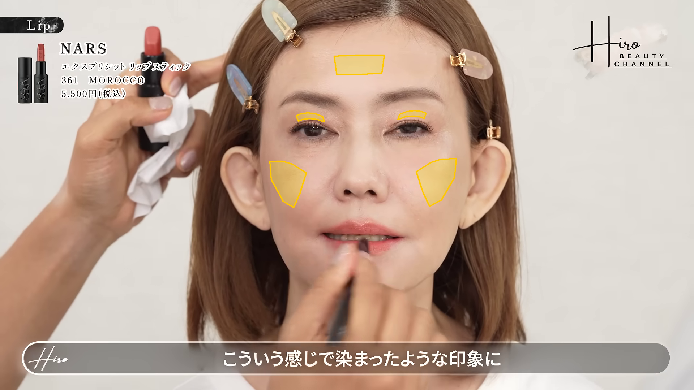
| 指標 | 単位 | before | after | 差 | 状態 |
|---|---|---|---|---|---|
| 画面左眉下の皮膚の細かな質感コントラスト（中央値） | 局所L*比 % | 0.359 | 0.286 | -0.073 | ok |
| 画面左眉下の皮膚の細かな質感コントラスト（p90） | 局所L*比 % | 1.439 | 1.404 | -0.035 | ok |
| 画面右眉下の皮膚の細かな質感コントラスト（中央値） | 局所L*比 % | 0.317 | 0.247 | -0.070 | ok |
| 画面右眉下の皮膚の細かな質感コントラスト（p90） | 局所L*比 % | 1.145 | 0.985 | -0.161 | ok |
| 画面左頬の細かな質感コントラスト（中央値・対照） | 局所L*比 % | 0.160 | 0.168 | +0.008 | ok |
| 画面左頬の細かな質感コントラスト（p90・対照） | 局所L*比 % | 0.481 | 0.492 | +0.011 | ok |
| 画面右頬の細かな質感コントラスト（中央値・対照） | 局所L*比 % | 0.169 | 0.116 | -0.054 | ok |
| 画面右頬の細かな質感コントラスト（p90・対照） | 局所L*比 % | 0.540 | 0.309 | -0.231 | ok |
| 額の細かな質感コントラスト（中央値・対照） | 局所L*比 % | 0.054 | 0.044 | -0.010 | ok |
| 額の細かな質感コントラスト（p90・対照） | 局所L*比 % | 0.284 | 0.181 | -0.103 | ok |
| 画面左眉下の皮膚のSEsc-inspired bright-scaliness率 | % | 0.000 | 0.000 | +0.000 | ok |
| 画面右眉下の皮膚のSEsc-inspired bright-scaliness率 | % | 0.000 | 0.000 | +0.000 | ok |
| 画面左頬・対照のSEsc-inspired bright-scaliness率 | % | 0.000 | 0.000 | +0.000 | ok |
| 画面右頬・対照のSEsc-inspired bright-scaliness率 | % | 0.000 | 0.000 | +0.000 | ok |
| 額・対照のSEsc-inspired bright-scaliness率 | % | 0.000 | 0.000 | +0.000 | ok |
| 画面左眉下の皮膚のGVR-inspired皮膚水分反射比 | ratio | 7.018e-07 | 2.043e-10 | -7.016e-07 | ok |
| 画面右眉下の皮膚のGVR-inspired皮膚水分反射比 | ratio | 2.913e-07 | 4.987e-08 | -2.414e-07 | ok |
| 画面左頬・対照のGVR-inspired皮膚水分反射比 | ratio | 8.628e-07 | 5.699e-07 | -2.929e-07 | ok |
| 画面右頬・対照のGVR-inspired皮膚水分反射比 | ratio | 4.851e-07 | 2.923e-07 | -1.927e-07 | ok |
| 額・対照のGVR-inspired皮膚水分反射比 | ratio | 5.123e-08 | 3.371e-10 | -5.089e-08 | ok |
| 画面左ほうれい線候補の周囲皮膚比・暗さコントラスト（中央値） | 局所L*比 % | 0.000 | 0.000 | +0.000 | ok |
| 画面左ほうれい線候補の周囲皮膚比・暗さコントラスト（p90） | 局所L*比 % | 3.749 | 9.478 | +5.729 | ok |
| 画面右ほうれい線候補の周囲皮膚比・暗さコントラスト（中央値） | 局所L*比 % | 0.000 | 0.000 | +0.000 | ok |
| 画面右ほうれい線候補の周囲皮膚比・暗さコントラスト（p90） | 局所L*比 % | 9.072 | 3.117 | -5.955 | ok |
眉下の皮膚の質感・ほうれい線候補 / rank 6
score 1.2625 ／ before 229.02s → after 1403.49s
顔サイズ比 1.0028 ／ 手の重なり before 0.00% / after 0.00%


| 指標 | 単位 | before | after | 差 | 状態 |
|---|---|---|---|---|---|
| 画面左眉下の皮膚の細かな質感コントラスト（中央値） | 局所L*比 % | 0.176 | 0.966 | +0.790 | ok |
| 画面左眉下の皮膚の細かな質感コントラスト（p90） | 局所L*比 % | 0.526 | 3.232 | +2.706 | ok |
| 画面右眉下の皮膚の細かな質感コントラスト（中央値） | 局所L*比 % | 0.143 | 0.742 | +0.599 | ok |
| 画面右眉下の皮膚の細かな質感コントラスト（p90） | 局所L*比 % | 0.397 | 2.754 | +2.358 | ok |
| 画面左頬の細かな質感コントラスト（中央値・対照） | 局所L*比 % | 0.173 | 0.257 | +0.084 | ok |
| 画面左頬の細かな質感コントラスト（p90・対照） | 局所L*比 % | 0.593 | 0.901 | +0.308 | ok |
| 画面右頬の細かな質感コントラスト（中央値・対照） | 局所L*比 % | 0.127 | 0.194 | +0.066 | ok |
| 画面右頬の細かな質感コントラスト（p90・対照） | 局所L*比 % | 0.345 | 0.594 | +0.249 | ok |
| 額の細かな質感コントラスト（中央値・対照） | 局所L*比 % | 0.080 | 0.085 | +0.005 | ok |
| 額の細かな質感コントラスト（p90・対照） | 局所L*比 % | 0.273 | 0.313 | +0.040 | ok |
| 画面左眉下の皮膚のSEsc-inspired bright-scaliness率 | % | 0.000 | 0.000 | +0.000 | ok |
| 画面右眉下の皮膚のSEsc-inspired bright-scaliness率 | % | 0.000 | 0.000 | +0.000 | ok |
| 画面左頬・対照のSEsc-inspired bright-scaliness率 | % | 0.000 | 0.000 | +0.000 | ok |
| 画面右頬・対照のSEsc-inspired bright-scaliness率 | % | 0.000 | 0.000 | +0.000 | ok |
| 額・対照のSEsc-inspired bright-scaliness率 | % | 0.000 | 0.000 | +0.000 | ok |
| 画面左眉下の皮膚のGVR-inspired皮膚水分反射比 | ratio | 1.479e-06 | 7.264e-07 | -7.529e-07 | ok |
| 画面右眉下の皮膚のGVR-inspired皮膚水分反射比 | ratio | 8.610e-07 | 8.286e-07 | -3.238e-08 | ok |
| 画面左頬・対照のGVR-inspired皮膚水分反射比 | ratio | 1.176e-06 | 3.931e-07 | -7.825e-07 | ok |
| 画面右頬・対照のGVR-inspired皮膚水分反射比 | ratio | 5.967e-07 | 1.423e-07 | -4.544e-07 | ok |
| 額・対照のGVR-inspired皮膚水分反射比 | ratio | 0.000 | 0.000 | +0.000 | ok |
| 画面左ほうれい線候補の周囲皮膚比・暗さコントラスト（中央値） | 局所L*比 % | 0.000 | 0.000 | +0.000 | ok |
| 画面左ほうれい線候補の周囲皮膚比・暗さコントラスト（p90） | 局所L*比 % | 3.043 | 9.244 | +6.201 | ok |
| 画面右ほうれい線候補の周囲皮膚比・暗さコントラスト（中央値） | 局所L*比 % | 0.000 | 0.000 | +0.000 | ok |
| 画面右ほうれい線候補の周囲皮膚比・暗さコントラスト（p90） | 局所L*比 % | 9.277 | 2.819 | -6.458 | ok |
眉下の皮膚の質感・ほうれい線候補 / rank 7
score 1.2637 ／ before 237.99s → after 1403.49s
顔サイズ比 1.0154 ／ 手の重なり before 0.00% / after 0.00%
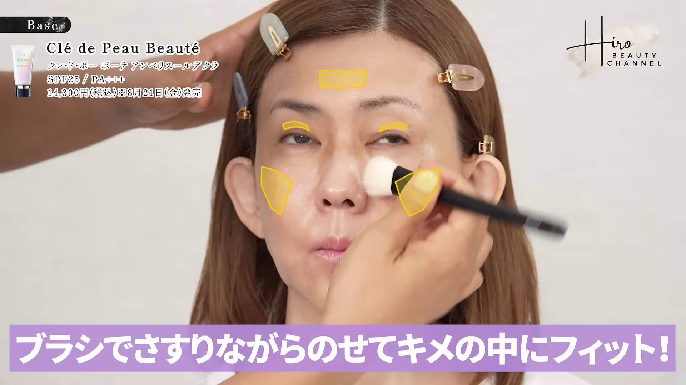

| 指標 | 単位 | before | after | 差 | 状態 |
|---|---|---|---|---|---|
| 画面左眉下の皮膚の細かな質感コントラスト（中央値） | 局所L*比 % | 0.339 | 0.966 | +0.628 | ok |
| 画面左眉下の皮膚の細かな質感コントラスト（p90） | 局所L*比 % | 0.877 | 3.232 | +2.355 | ok |
| 画面右眉下の皮膚の細かな質感コントラスト（中央値） | 局所L*比 % | 0.201 | 0.742 | +0.541 | ok |
| 画面右眉下の皮膚の細かな質感コントラスト（p90） | 局所L*比 % | 0.664 | 2.754 | +2.090 | ok |
| 画面左頬の細かな質感コントラスト（中央値・対照） | 局所L*比 % | 0.228 | 0.257 | +0.029 | ok |
| 画面左頬の細かな質感コントラスト（p90・対照） | 局所L*比 % | 0.793 | 0.901 | +0.108 | ok |
| 画面右頬の細かな質感コントラスト（中央値・対照） | 局所L*比 % | 0.196 | 0.194 | -0.003 | ok |
| 画面右頬の細かな質感コントラスト（p90・対照） | 局所L*比 % | 0.738 | 0.594 | -0.144 | ok |
| 額の細かな質感コントラスト（中央値・対照） | 局所L*比 % | 0.144 | 0.085 | -0.059 | ok |
| 額の細かな質感コントラスト（p90・対照） | 局所L*比 % | 0.480 | 0.313 | -0.167 | ok |
| 画面左眉下の皮膚のSEsc-inspired bright-scaliness率 | % | 0.000 | 0.000 | +0.000 | ok |
| 画面右眉下の皮膚のSEsc-inspired bright-scaliness率 | % | 0.000 | 0.000 | +0.000 | ok |
| 画面左頬・対照のSEsc-inspired bright-scaliness率 | % | 0.000 | 0.000 | +0.000 | ok |
| 画面右頬・対照のSEsc-inspired bright-scaliness率 | % | 0.000 | 0.000 | +0.000 | ok |
| 額・対照のSEsc-inspired bright-scaliness率 | % | 0.000 | 0.000 | +0.000 | ok |
| 画面左眉下の皮膚のGVR-inspired皮膚水分反射比 | ratio | 1.464e-07 | 7.264e-07 | +5.800e-07 | ok |
| 画面右眉下の皮膚のGVR-inspired皮膚水分反射比 | ratio | 3.307e-07 | 8.286e-07 | +4.979e-07 | ok |
| 画面左頬・対照のGVR-inspired皮膚水分反射比 | ratio | 1.287e-06 | 3.931e-07 | -8.942e-07 | ok |
| 画面右頬・対照のGVR-inspired皮膚水分反射比 | ratio | 7.248e-07 | 1.423e-07 | -5.825e-07 | ok |
| 額・対照のGVR-inspired皮膚水分反射比 | ratio | 3.496e-11 | 0.000 | -3.496e-11 | ok |
| 画面左ほうれい線候補の周囲皮膚比・暗さコントラスト（中央値） | 局所L*比 % | 0.000 | 0.000 | +0.000 | ok |
| 画面左ほうれい線候補の周囲皮膚比・暗さコントラスト（p90） | 局所L*比 % | 6.316 | 9.244 | +2.928 | ok |
| 画面右ほうれい線候補の周囲皮膚比・暗さコントラスト（中央値） | 局所L*比 % | 0.000 | 0.000 | +0.000 | ok |
| 画面右ほうれい線候補の周囲皮膚比・暗さコントラスト（p90） | 局所L*比 % | 15.830 | 2.819 | -13.011 | ok |
眉下の皮膚の質感・ほうれい線候補 / rank 8
score 1.3304 ／ before 212.50s → after 1403.49s
顔サイズ比 1.0057 ／ 手の重なり before 0.00% / after 0.00%

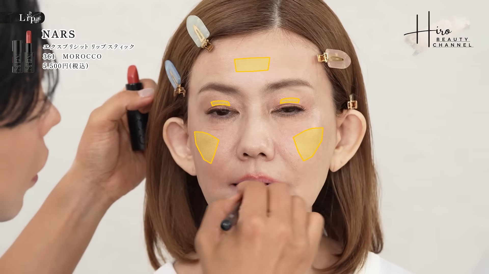
| 指標 | 単位 | before | after | 差 | 状態 |
|---|---|---|---|---|---|
| 画面左眉下の皮膚の細かな質感コントラスト（中央値） | 局所L*比 % | 0.293 | 0.966 | +0.673 | ok |
| 画面左眉下の皮膚の細かな質感コントラスト（p90） | 局所L*比 % | 1.017 | 3.232 | +2.215 | ok |
| 画面右眉下の皮膚の細かな質感コントラスト（中央値） | 局所L*比 % | 0.159 | 0.742 | +0.582 | ok |
| 画面右眉下の皮膚の細かな質感コントラスト（p90） | 局所L*比 % | 0.500 | 2.754 | +2.254 | ok |
| 画面左頬の細かな質感コントラスト（中央値・対照） | 局所L*比 % | 0.178 | 0.257 | +0.079 | ok |
| 画面左頬の細かな質感コントラスト（p90・対照） | 局所L*比 % | 0.468 | 0.901 | +0.433 | ok |
| 画面右頬の細かな質感コントラスト（中央値・対照） | 局所L*比 % | 0.143 | 0.194 | +0.050 | ok |
| 画面右頬の細かな質感コントラスト（p90・対照） | 局所L*比 % | 0.406 | 0.594 | +0.188 | ok |
| 額の細かな質感コントラスト（中央値・対照） | 局所L*比 % | 0.054 | 0.085 | +0.030 | ok |
| 額の細かな質感コントラスト（p90・対照） | 局所L*比 % | 0.264 | 0.313 | +0.049 | ok |
| 画面左眉下の皮膚のSEsc-inspired bright-scaliness率 | % | 0.000 | 0.000 | +0.000 | ok |
| 画面右眉下の皮膚のSEsc-inspired bright-scaliness率 | % | 0.000 | 0.000 | +0.000 | ok |
| 画面左頬・対照のSEsc-inspired bright-scaliness率 | % | 0.000 | 0.000 | +0.000 | ok |
| 画面右頬・対照のSEsc-inspired bright-scaliness率 | % | 0.000 | 0.000 | +0.000 | ok |
| 額・対照のSEsc-inspired bright-scaliness率 | % | 0.000 | 0.000 | +0.000 | ok |
| 画面左眉下の皮膚のGVR-inspired皮膚水分反射比 | ratio | 1.442e-06 | 7.264e-07 | -7.152e-07 | ok |
| 画面右眉下の皮膚のGVR-inspired皮膚水分反射比 | ratio | 6.064e-07 | 8.286e-07 | +2.222e-07 | ok |
| 画面左頬・対照のGVR-inspired皮膚水分反射比 | ratio | 1.098e-06 | 3.931e-07 | -7.046e-07 | ok |
| 画面右頬・対照のGVR-inspired皮膚水分反射比 | ratio | 4.302e-07 | 1.423e-07 | -2.879e-07 | ok |
| 額・対照のGVR-inspired皮膚水分反射比 | ratio | 3.089e-11 | 0.000 | -3.089e-11 | ok |
| 画面左ほうれい線候補の周囲皮膚比・暗さコントラスト（中央値） | 局所L*比 % | 0.000 | 0.000 | +0.000 | ok |
| 画面左ほうれい線候補の周囲皮膚比・暗さコントラスト（p90） | 局所L*比 % | 6.066 | 9.244 | +3.178 | ok |
| 画面右ほうれい線候補の周囲皮膚比・暗さコントラスト（中央値） | 局所L*比 % | 0.000 | 0.000 | +0.000 | ok |
| 画面右ほうれい線候補の周囲皮膚比・暗さコントラスト（p90） | 局所L*比 % | 9.501 | 2.819 | -6.682 | ok |
眉下の皮膚の質感・ほうれい線候補 / rank 9
score 1.4458 ／ before 216.01s → after 1412.99s
顔サイズ比 1.0115 ／ 手の重なり before 0.00% / after 0.00%
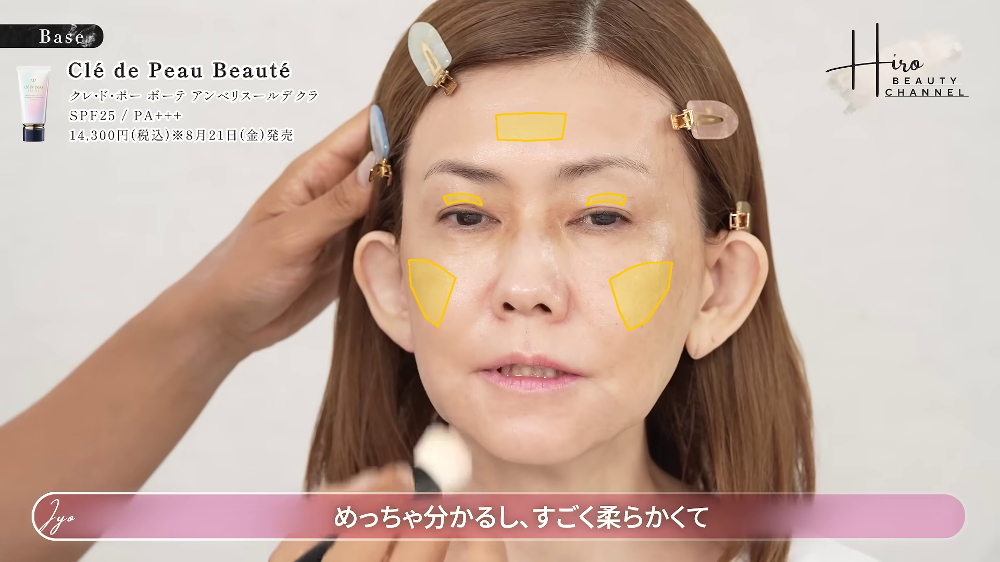
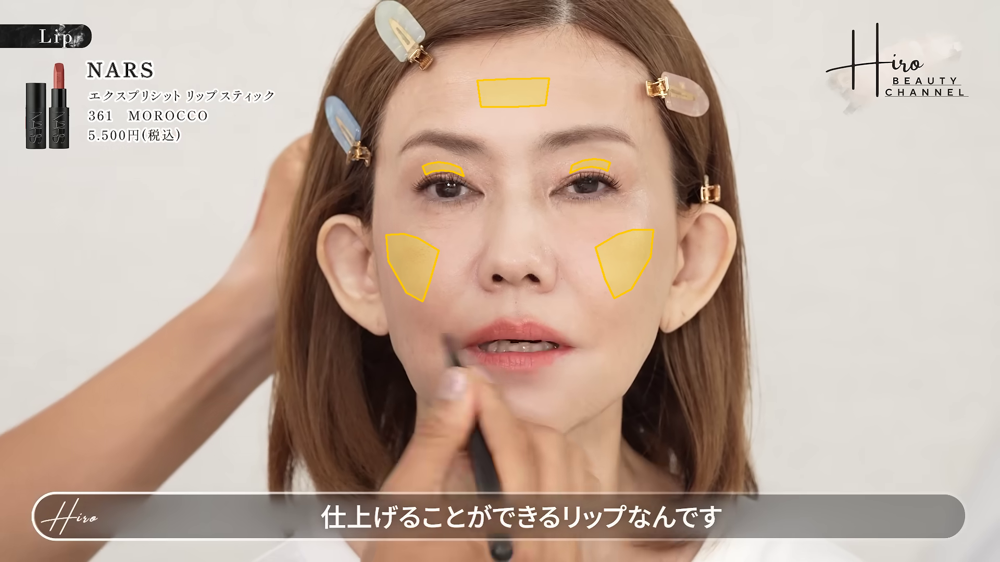
| 指標 | 単位 | before | after | 差 | 状態 |
|---|---|---|---|---|---|
| 画面左眉下の皮膚の細かな質感コントラスト（中央値） | 局所L*比 % | 0.359 | 0.314 | -0.044 | ok |
| 画面左眉下の皮膚の細かな質感コントラスト（p90） | 局所L*比 % | 1.439 | 1.638 | +0.199 | ok |
| 画面右眉下の皮膚の細かな質感コントラスト（中央値） | 局所L*比 % | 0.317 | 0.206 | -0.111 | ok |
| 画面右眉下の皮膚の細かな質感コントラスト（p90） | 局所L*比 % | 1.145 | 0.653 | -0.493 | ok |
| 画面左頬の細かな質感コントラスト（中央値・対照） | 局所L*比 % | 0.160 | 0.172 | +0.012 | ok |
| 画面左頬の細かな質感コントラスト（p90・対照） | 局所L*比 % | 0.481 | 0.528 | +0.047 | ok |
| 画面右頬の細かな質感コントラスト（中央値・対照） | 局所L*比 % | 0.169 | 0.124 | -0.046 | ok |
| 画面右頬の細かな質感コントラスト（p90・対照） | 局所L*比 % | 0.540 | 0.349 | -0.192 | ok |
| 額の細かな質感コントラスト（中央値・対照） | 局所L*比 % | 0.054 | 0.044 | -0.010 | ok |
| 額の細かな質感コントラスト（p90・対照） | 局所L*比 % | 0.284 | 0.195 | -0.089 | ok |
| 画面左眉下の皮膚のSEsc-inspired bright-scaliness率 | % | 0.000 | 0.000 | +0.000 | ok |
| 画面右眉下の皮膚のSEsc-inspired bright-scaliness率 | % | 0.000 | 0.000 | +0.000 | ok |
| 画面左頬・対照のSEsc-inspired bright-scaliness率 | % | 0.000 | 0.000 | +0.000 | ok |
| 画面右頬・対照のSEsc-inspired bright-scaliness率 | % | 0.000 | 0.000 | +0.000 | ok |
| 額・対照のSEsc-inspired bright-scaliness率 | % | 0.000 | 0.000 | +0.000 | ok |
| 画面左眉下の皮膚のGVR-inspired皮膚水分反射比 | ratio | 7.018e-07 | 3.783e-08 | -6.640e-07 | ok |
| 画面右眉下の皮膚のGVR-inspired皮膚水分反射比 | ratio | 2.913e-07 | 1.265e-07 | -1.647e-07 | ok |
| 画面左頬・対照のGVR-inspired皮膚水分反射比 | ratio | 8.628e-07 | 6.021e-07 | -2.607e-07 | ok |
| 画面右頬・対照のGVR-inspired皮膚水分反射比 | ratio | 4.851e-07 | 3.153e-07 | -1.698e-07 | ok |
| 額・対照のGVR-inspired皮膚水分反射比 | ratio | 5.123e-08 | 0.000 | -5.123e-08 | ok |
| 画面左ほうれい線候補の周囲皮膚比・暗さコントラスト（中央値） | 局所L*比 % | 0.000 | 0.000 | +0.000 | ok |
| 画面左ほうれい線候補の周囲皮膚比・暗さコントラスト（p90） | 局所L*比 % | 3.749 | 9.625 | +5.877 | ok |
| 画面右ほうれい線候補の周囲皮膚比・暗さコントラスト（中央値） | 局所L*比 % | 0.000 | 0.000 | +0.000 | ok |
| 画面右ほうれい線候補の周囲皮膚比・暗さコントラスト（p90） | 局所L*比 % | 9.072 | 3.524 | -5.547 | ok |
眉下の皮膚の質感・ほうれい線候補 / rank 10
score 1.4826 ／ before 229.98s → after 1410.99s
顔サイズ比 1.0162 ／ 手の重なり before 0.00% / after 0.00%
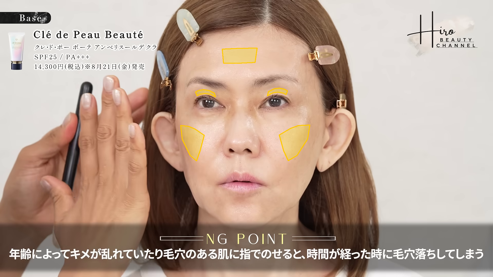

| 指標 | 単位 | before | after | 差 | 状態 |
|---|---|---|---|---|---|
| 画面左眉下の皮膚の細かな質感コントラスト（中央値） | 局所L*比 % | 0.266 | 0.477 | +0.211 | ok |
| 画面左眉下の皮膚の細かな質感コントラスト（p90） | 局所L*比 % | 0.781 | 3.320 | +2.539 | ok |
| 画面右眉下の皮膚の細かな質感コントラスト（中央値） | 局所L*比 % | 0.193 | 0.354 | +0.161 | ok |
| 画面右眉下の皮膚の細かな質感コントラスト（p90） | 局所L*比 % | 0.848 | 1.694 | +0.845 | ok |
| 画面左頬の細かな質感コントラスト（中央値・対照） | 局所L*比 % | 0.205 | 0.185 | -0.020 | ok |
| 画面左頬の細かな質感コントラスト（p90・対照） | 局所L*比 % | 0.721 | 0.562 | -0.159 | ok |
| 画面右頬の細かな質感コントラスト（中央値・対照） | 局所L*比 % | 0.186 | 0.119 | -0.067 | ok |
| 画面右頬の細かな質感コントラスト（p90・対照） | 局所L*比 % | 0.593 | 0.351 | -0.243 | ok |
| 額の細かな質感コントラスト（中央値・対照） | 局所L*比 % | 0.092 | 0.072 | -0.020 | ok |
| 額の細かな質感コントラスト（p90・対照） | 局所L*比 % | 0.424 | 0.250 | -0.175 | ok |
| 画面左眉下の皮膚のSEsc-inspired bright-scaliness率 | % | 0.000 | 0.000 | +0.000 | ok |
| 画面右眉下の皮膚のSEsc-inspired bright-scaliness率 | % | 0.000 | 0.000 | +0.000 | ok |
| 画面左頬・対照のSEsc-inspired bright-scaliness率 | % | 0.000 | 0.000 | +0.000 | ok |
| 画面右頬・対照のSEsc-inspired bright-scaliness率 | % | 0.000 | 0.000 | +0.000 | ok |
| 額・対照のSEsc-inspired bright-scaliness率 | % | 0.000 | 0.000 | +0.000 | ok |
| 画面左眉下の皮膚のGVR-inspired皮膚水分反射比 | ratio | 1.723e-06 | 1.534e-07 | -1.570e-06 | ok |
| 画面右眉下の皮膚のGVR-inspired皮膚水分反射比 | ratio | 1.056e-06 | 1.964e-07 | -8.597e-07 | ok |
| 画面左頬・対照のGVR-inspired皮膚水分反射比 | ratio | 7.028e-07 | 6.652e-07 | -3.762e-08 | ok |
| 画面右頬・対照のGVR-inspired皮膚水分反射比 | ratio | 6.986e-07 | 1.611e-07 | -5.375e-07 | ok |
| 額・対照のGVR-inspired皮膚水分反射比 | ratio | 1.039e-10 | 0.000 | -1.039e-10 | ok |
| 画面左ほうれい線候補の周囲皮膚比・暗さコントラスト（中央値） | 局所L*比 % | 0.000 | 0.000 | +0.000 | ok |
| 画面左ほうれい線候補の周囲皮膚比・暗さコントラスト（p90） | 局所L*比 % | 2.992 | 9.181 | +6.189 | ok |
| 画面右ほうれい線候補の周囲皮膚比・暗さコントラスト（中央値） | 局所L*比 % | 0.000 | 0.000 | +0.000 | ok |
| 画面右ほうれい線候補の周囲皮膚比・暗さコントラスト（p90） | 局所L*比 % | 9.143 | 2.309 | -6.834 | ok |
眉下の皮膚の質感・ほうれい線候補 / rank 11
score 1.4828 ／ before 212.50s → after 1406.99s
顔サイズ比 1.0142 ／ 手の重なり before 0.00% / after 0.00%

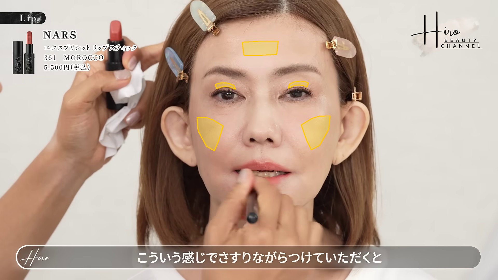
| 指標 | 単位 | before | after | 差 | 状態 |
|---|---|---|---|---|---|
| 画面左眉下の皮膚の細かな質感コントラスト（中央値） | 局所L*比 % | 0.293 | 0.382 | +0.088 | ok |
| 画面左眉下の皮膚の細かな質感コントラスト（p90） | 局所L*比 % | 1.017 | 2.319 | +1.301 | ok |
| 画面右眉下の皮膚の細かな質感コントラスト（中央値） | 局所L*比 % | 0.159 | 0.491 | +0.331 | ok |
| 画面右眉下の皮膚の細かな質感コントラスト（p90） | 局所L*比 % | 0.500 | 1.815 | +1.315 | ok |
| 画面左頬の細かな質感コントラスト（中央値・対照） | 局所L*比 % | 0.178 | 0.166 | -0.011 | ok |
| 画面左頬の細かな質感コントラスト（p90・対照） | 局所L*比 % | 0.468 | 0.486 | +0.018 | ok |
| 画面右頬の細かな質感コントラスト（中央値・対照） | 局所L*比 % | 0.143 | 0.125 | -0.019 | ok |
| 画面右頬の細かな質感コントラスト（p90・対照） | 局所L*比 % | 0.406 | 0.350 | -0.055 | ok |
| 額の細かな質感コントラスト（中央値・対照） | 局所L*比 % | 0.054 | 0.042 | -0.012 | ok |
| 額の細かな質感コントラスト（p90・対照） | 局所L*比 % | 0.264 | 0.198 | -0.065 | ok |
| 画面左眉下の皮膚のSEsc-inspired bright-scaliness率 | % | 0.000 | 0.000 | +0.000 | ok |
| 画面右眉下の皮膚のSEsc-inspired bright-scaliness率 | % | 0.000 | 0.000 | +0.000 | ok |
| 画面左頬・対照のSEsc-inspired bright-scaliness率 | % | 0.000 | 0.000 | +0.000 | ok |
| 画面右頬・対照のSEsc-inspired bright-scaliness率 | % | 0.000 | 0.000 | +0.000 | ok |
| 額・対照のSEsc-inspired bright-scaliness率 | % | 0.000 | 0.000 | +0.000 | ok |
| 画面左眉下の皮膚のGVR-inspired皮膚水分反射比 | ratio | 1.442e-06 | 9.629e-09 | -1.432e-06 | ok |
| 画面右眉下の皮膚のGVR-inspired皮膚水分反射比 | ratio | 6.064e-07 | 5.051e-08 | -5.559e-07 | ok |
| 画面左頬・対照のGVR-inspired皮膚水分反射比 | ratio | 1.098e-06 | 6.099e-07 | -4.877e-07 | ok |
| 画面右頬・対照のGVR-inspired皮膚水分反射比 | ratio | 4.302e-07 | 1.837e-07 | -2.465e-07 | ok |
| 額・対照のGVR-inspired皮膚水分反射比 | ratio | 3.089e-11 | 3.724e-09 | +3.693e-09 | ok |
| 画面左ほうれい線候補の周囲皮膚比・暗さコントラスト（中央値） | 局所L*比 % | 0.000 | 0.000 | +0.000 | ok |
| 画面左ほうれい線候補の周囲皮膚比・暗さコントラスト（p90） | 局所L*比 % | 6.066 | 10.206 | +4.140 | ok |
| 画面右ほうれい線候補の周囲皮膚比・暗さコントラスト（中央値） | 局所L*比 % | 0.000 | 0.000 | +0.000 | ok |
| 画面右ほうれい線候補の周囲皮膚比・暗さコントラスト（p90） | 局所L*比 % | 9.501 | 3.083 | -6.418 | ok |
眉下の皮膚の質感・ほうれい線候補 / rank 12
score 1.5195 ／ before 229.02s → after 1406.99s
顔サイズ比 1.0229 ／ 手の重なり before 0.00% / after 0.00%
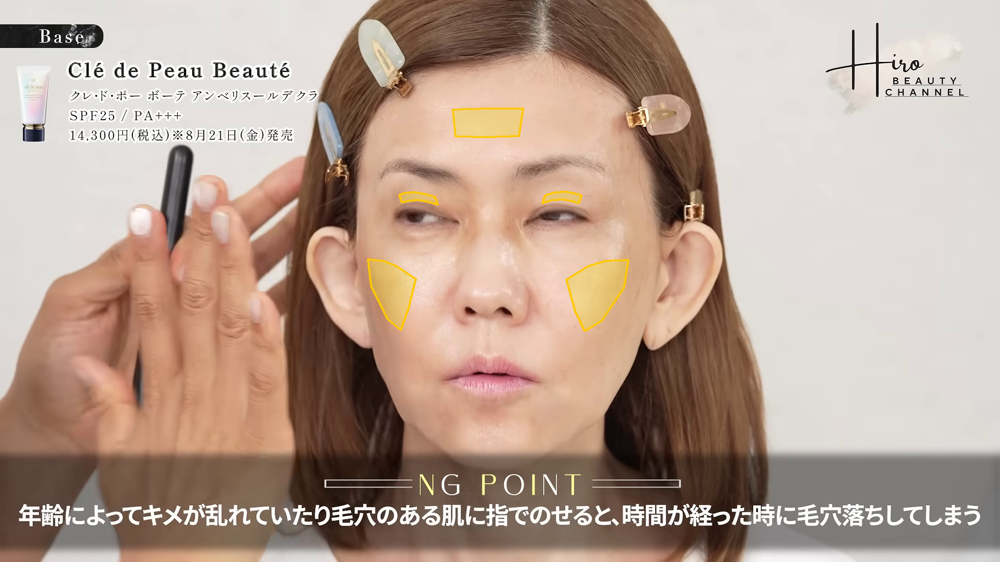

| 指標 | 単位 | before | after | 差 | 状態 |
|---|---|---|---|---|---|
| 画面左眉下の皮膚の細かな質感コントラスト（中央値） | 局所L*比 % | 0.176 | 0.382 | +0.206 | ok |
| 画面左眉下の皮膚の細かな質感コントラスト（p90） | 局所L*比 % | 0.526 | 2.319 | +1.792 | ok |
| 画面右眉下の皮膚の細かな質感コントラスト（中央値） | 局所L*比 % | 0.143 | 0.491 | +0.348 | ok |
| 画面右眉下の皮膚の細かな質感コントラスト（p90） | 局所L*比 % | 0.397 | 1.815 | +1.418 | ok |
| 画面左頬の細かな質感コントラスト（中央値・対照） | 局所L*比 % | 0.173 | 0.166 | -0.007 | ok |
| 画面左頬の細かな質感コントラスト（p90・対照） | 局所L*比 % | 0.593 | 0.486 | -0.107 | ok |
| 画面右頬の細かな質感コントラスト（中央値・対照） | 局所L*比 % | 0.127 | 0.125 | -0.003 | ok |
| 画面右頬の細かな質感コントラスト（p90・対照） | 局所L*比 % | 0.345 | 0.350 | +0.005 | ok |
| 額の細かな質感コントラスト（中央値・対照） | 局所L*比 % | 0.080 | 0.042 | -0.038 | ok |
| 額の細かな質感コントラスト（p90・対照） | 局所L*比 % | 0.273 | 0.198 | -0.074 | ok |
| 画面左眉下の皮膚のSEsc-inspired bright-scaliness率 | % | 0.000 | 0.000 | +0.000 | ok |
| 画面右眉下の皮膚のSEsc-inspired bright-scaliness率 | % | 0.000 | 0.000 | +0.000 | ok |
| 画面左頬・対照のSEsc-inspired bright-scaliness率 | % | 0.000 | 0.000 | +0.000 | ok |
| 画面右頬・対照のSEsc-inspired bright-scaliness率 | % | 0.000 | 0.000 | +0.000 | ok |
| 額・対照のSEsc-inspired bright-scaliness率 | % | 0.000 | 0.000 | +0.000 | ok |
| 画面左眉下の皮膚のGVR-inspired皮膚水分反射比 | ratio | 1.479e-06 | 9.629e-09 | -1.470e-06 | ok |
| 画面右眉下の皮膚のGVR-inspired皮膚水分反射比 | ratio | 8.610e-07 | 5.051e-08 | -8.105e-07 | ok |
| 画面左頬・対照のGVR-inspired皮膚水分反射比 | ratio | 1.176e-06 | 6.099e-07 | -5.656e-07 | ok |
| 画面右頬・対照のGVR-inspired皮膚水分反射比 | ratio | 5.967e-07 | 1.837e-07 | -4.130e-07 | ok |
| 額・対照のGVR-inspired皮膚水分反射比 | ratio | 0.000 | 3.724e-09 | +3.724e-09 | ok |
| 画面左ほうれい線候補の周囲皮膚比・暗さコントラスト（中央値） | 局所L*比 % | 0.000 | 0.000 | +0.000 | ok |
| 画面左ほうれい線候補の周囲皮膚比・暗さコントラスト（p90） | 局所L*比 % | 3.043 | 10.206 | +7.163 | ok |
| 画面右ほうれい線候補の周囲皮膚比・暗さコントラスト（中央値） | 局所L*比 % | 0.000 | 0.000 | +0.000 | ok |
| 画面右ほうれい線候補の周囲皮膚比・暗さコントラスト（p90） | 局所L*比 % | 9.277 | 3.083 | -6.194 | ok |
眉下の皮膚の質感・ほうれい線候補 / rank 13
score 1.5692 ／ before 222.51s → after 1406.99s
顔サイズ比 1.0152 ／ 手の重なり before 0.00% / after 0.00%
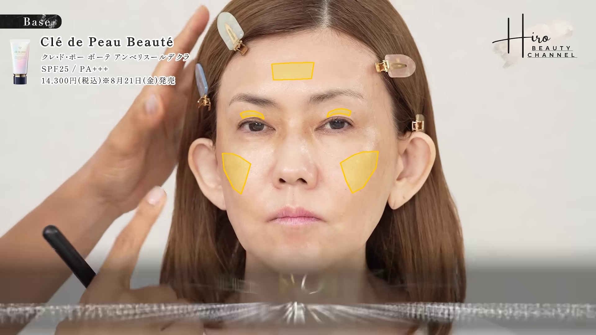

| 指標 | 単位 | before | after | 差 | 状態 |
|---|---|---|---|---|---|
| 画面左眉下の皮膚の細かな質感コントラスト（中央値） | 局所L*比 % | 0.242 | 0.382 | +0.139 | ok |
| 画面左眉下の皮膚の細かな質感コントラスト（p90） | 局所L*比 % | 0.868 | 2.319 | +1.451 | ok |
| 画面右眉下の皮膚の細かな質感コントラスト（中央値） | 局所L*比 % | 0.176 | 0.491 | +0.315 | ok |
| 画面右眉下の皮膚の細かな質感コントラスト（p90） | 局所L*比 % | 0.759 | 1.815 | +1.056 | ok |
| 画面左頬の細かな質感コントラスト（中央値・対照） | 局所L*比 % | 0.166 | 0.166 | +4.836e-04 | ok |
| 画面左頬の細かな質感コントラスト（p90・対照） | 局所L*比 % | 0.517 | 0.486 | -0.031 | ok |
| 画面右頬の細かな質感コントラスト（中央値・対照） | 局所L*比 % | 0.140 | 0.125 | -0.016 | ok |
| 画面右頬の細かな質感コントラスト（p90・対照） | 局所L*比 % | 0.409 | 0.350 | -0.059 | ok |
| 額の細かな質感コントラスト（中央値・対照） | 局所L*比 % | 0.086 | 0.042 | -0.044 | ok |
| 額の細かな質感コントラスト（p90・対照） | 局所L*比 % | 0.344 | 0.198 | -0.146 | ok |
| 画面左眉下の皮膚のSEsc-inspired bright-scaliness率 | % | 0.000 | 0.000 | +0.000 | ok |
| 画面右眉下の皮膚のSEsc-inspired bright-scaliness率 | % | 0.000 | 0.000 | +0.000 | ok |
| 画面左頬・対照のSEsc-inspired bright-scaliness率 | % | 0.000 | 0.000 | +0.000 | ok |
| 画面右頬・対照のSEsc-inspired bright-scaliness率 | % | 0.000 | 0.000 | +0.000 | ok |
| 額・対照のSEsc-inspired bright-scaliness率 | % | 0.000 | 0.000 | +0.000 | ok |
| 画面左眉下の皮膚のGVR-inspired皮膚水分反射比 | ratio | 1.446e-06 | 9.629e-09 | -1.437e-06 | ok |
| 画面右眉下の皮膚のGVR-inspired皮膚水分反射比 | ratio | 6.727e-07 | 5.051e-08 | -6.222e-07 | ok |
| 画面左頬・対照のGVR-inspired皮膚水分反射比 | ratio | 9.685e-07 | 6.099e-07 | -3.586e-07 | ok |
| 画面右頬・対照のGVR-inspired皮膚水分反射比 | ratio | 6.171e-07 | 1.837e-07 | -4.335e-07 | ok |
| 額・対照のGVR-inspired皮膚水分反射比 | ratio | 7.292e-09 | 3.724e-09 | -3.569e-09 | ok |
| 画面左ほうれい線候補の周囲皮膚比・暗さコントラスト（中央値） | 局所L*比 % | 0.000 | 0.000 | +0.000 | ok |
| 画面左ほうれい線候補の周囲皮膚比・暗さコントラスト（p90） | 局所L*比 % | 3.550 | 10.206 | +6.655 | ok |
| 画面右ほうれい線候補の周囲皮膚比・暗さコントラスト（中央値） | 局所L*比 % | 0.000 | 0.000 | +0.000 | ok |
| 画面右ほうれい線候補の周囲皮膚比・暗さコントラスト（p90） | 局所L*比 % | 12.285 | 3.083 | -9.202 | ok |
眉下の皮膚の質感・ほうれい線候補 / rank 14
score 1.5822 ／ before 212.50s → after 1410.99s
顔サイズ比 1.0127 ／ 手の重なり before 0.00% / after 0.00%
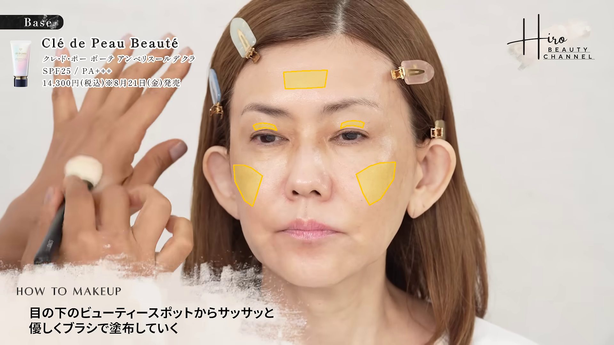

| 指標 | 単位 | before | after | 差 | 状態 |
|---|---|---|---|---|---|
| 画面左眉下の皮膚の細かな質感コントラスト（中央値） | 局所L*比 % | 0.293 | 0.477 | +0.184 | ok |
| 画面左眉下の皮膚の細かな質感コントラスト（p90） | 局所L*比 % | 1.017 | 3.320 | +2.302 | ok |
| 画面右眉下の皮膚の細かな質感コントラスト（中央値） | 局所L*比 % | 0.159 | 0.354 | +0.195 | ok |
| 画面右眉下の皮膚の細かな質感コントラスト（p90） | 局所L*比 % | 0.500 | 1.694 | +1.193 | ok |
| 画面左頬の細かな質感コントラスト（中央値・対照） | 局所L*比 % | 0.178 | 0.185 | +0.007 | ok |
| 画面左頬の細かな質感コントラスト（p90・対照） | 局所L*比 % | 0.468 | 0.562 | +0.094 | ok |
| 画面右頬の細かな質感コントラスト（中央値・対照） | 局所L*比 % | 0.143 | 0.119 | -0.024 | ok |
| 画面右頬の細かな質感コントラスト（p90・対照） | 局所L*比 % | 0.406 | 0.351 | -0.055 | ok |
| 額の細かな質感コントラスト（中央値・対照） | 局所L*比 % | 0.054 | 0.072 | +0.018 | ok |
| 額の細かな質感コントラスト（p90・対照） | 局所L*比 % | 0.264 | 0.250 | -0.014 | ok |
| 画面左眉下の皮膚のSEsc-inspired bright-scaliness率 | % | 0.000 | 0.000 | +0.000 | ok |
| 画面右眉下の皮膚のSEsc-inspired bright-scaliness率 | % | 0.000 | 0.000 | +0.000 | ok |
| 画面左頬・対照のSEsc-inspired bright-scaliness率 | % | 0.000 | 0.000 | +0.000 | ok |
| 画面右頬・対照のSEsc-inspired bright-scaliness率 | % | 0.000 | 0.000 | +0.000 | ok |
| 額・対照のSEsc-inspired bright-scaliness率 | % | 0.000 | 0.000 | +0.000 | ok |
| 画面左眉下の皮膚のGVR-inspired皮膚水分反射比 | ratio | 1.442e-06 | 1.534e-07 | -1.288e-06 | ok |
| 画面右眉下の皮膚のGVR-inspired皮膚水分反射比 | ratio | 6.064e-07 | 1.964e-07 | -4.100e-07 | ok |
| 画面左頬・対照のGVR-inspired皮膚水分反射比 | ratio | 1.098e-06 | 6.652e-07 | -4.325e-07 | ok |
| 画面右頬・対照のGVR-inspired皮膚水分反射比 | ratio | 4.302e-07 | 1.611e-07 | -2.690e-07 | ok |
| 額・対照のGVR-inspired皮膚水分反射比 | ratio | 3.089e-11 | 0.000 | -3.089e-11 | ok |
| 画面左ほうれい線候補の周囲皮膚比・暗さコントラスト（中央値） | 局所L*比 % | 0.000 | 0.000 | +0.000 | ok |
| 画面左ほうれい線候補の周囲皮膚比・暗さコントラスト（p90） | 局所L*比 % | 6.066 | 9.181 | +3.115 | ok |
| 画面右ほうれい線候補の周囲皮膚比・暗さコントラスト（中央値） | 局所L*比 % | 0.000 | 0.000 | +0.000 | ok |
| 画面右ほうれい線候補の周囲皮膚比・暗さコントラスト（p90） | 局所L*比 % | 9.501 | 2.309 | -7.192 | ok |
眉下の皮膚の質感・ほうれい線候補 / rank 15
score 1.6071 ／ before 240.99s → after 1410.99s
顔サイズ比 1.0216 ／ 手の重なり before 0.00% / after 0.00%
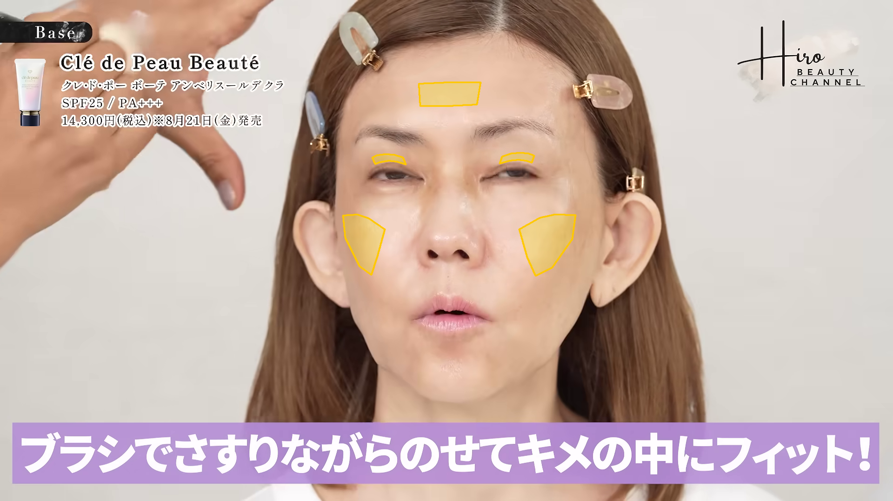

| 指標 | 単位 | before | after | 差 | 状態 |
|---|---|---|---|---|---|
| 画面左眉下の皮膚の細かな質感コントラスト（中央値） | 局所L*比 % | 0.201 | 0.477 | +0.277 | ok |
| 画面左眉下の皮膚の細かな質感コントラスト（p90） | 局所L*比 % | 0.783 | 3.320 | +2.537 | ok |
| 画面右眉下の皮膚の細かな質感コントラスト（中央値） | 局所L*比 % | 0.145 | 0.354 | +0.209 | ok |
| 画面右眉下の皮膚の細かな質感コントラスト（p90） | 局所L*比 % | 0.489 | 1.694 | +1.204 | ok |
| 画面左頬の細かな質感コントラスト（中央値・対照） | 局所L*比 % | 0.138 | 0.185 | +0.046 | ok |
| 画面左頬の細かな質感コントラスト（p90・対照） | 局所L*比 % | 0.356 | 0.562 | +0.206 | ok |
| 画面右頬の細かな質感コントラスト（中央値・対照） | 局所L*比 % | 0.120 | 0.119 | -4.958e-04 | ok |
| 画面右頬の細かな質感コントラスト（p90・対照） | 局所L*比 % | 0.316 | 0.351 | +0.035 | ok |
| 額の細かな質感コントラスト（中央値・対照） | 局所L*比 % | 0.048 | 0.072 | +0.024 | ok |
| 額の細かな質感コントラスト（p90・対照） | 局所L*比 % | 0.192 | 0.250 | +0.058 | ok |
| 画面左眉下の皮膚のSEsc-inspired bright-scaliness率 | % | 0.000 | 0.000 | +0.000 | ok |
| 画面右眉下の皮膚のSEsc-inspired bright-scaliness率 | % | 0.000 | 0.000 | +0.000 | ok |
| 画面左頬・対照のSEsc-inspired bright-scaliness率 | % | 0.000 | 0.000 | +0.000 | ok |
| 画面右頬・対照のSEsc-inspired bright-scaliness率 | % | 0.000 | 0.000 | +0.000 | ok |
| 額・対照のSEsc-inspired bright-scaliness率 | % | 0.000 | 0.000 | +0.000 | ok |
| 画面左眉下の皮膚のGVR-inspired皮膚水分反射比 | ratio | 2.851e-07 | 1.534e-07 | -1.317e-07 | ok |
| 画面右眉下の皮膚のGVR-inspired皮膚水分反射比 | ratio | 1.378e-08 | 1.964e-07 | +1.826e-07 | ok |
| 画面左頬・対照のGVR-inspired皮膚水分反射比 | ratio | 1.470e-06 | 6.652e-07 | -8.050e-07 | ok |
| 画面右頬・対照のGVR-inspired皮膚水分反射比 | ratio | 5.976e-07 | 1.611e-07 | -4.365e-07 | ok |
| 額・対照のGVR-inspired皮膚水分反射比 | ratio | 1.993e-07 | 0.000 | -1.993e-07 | ok |
| 画面左ほうれい線候補の周囲皮膚比・暗さコントラスト（中央値） | 局所L*比 % | 0.000 | 0.000 | +0.000 | ok |
| 画面左ほうれい線候補の周囲皮膚比・暗さコントラスト（p90） | 局所L*比 % | 5.067 | 9.181 | +4.114 | ok |
| 画面右ほうれい線候補の周囲皮膚比・暗さコントラスト（中央値） | 局所L*比 % | 0.000 | 0.000 | +0.000 | ok |
| 画面右ほうれい線候補の周囲皮膚比・暗さコントラスト（p90） | 局所L*比 % | 10.190 | 2.309 | -7.881 | ok |
眉下の皮膚の質感・ほうれい線候補 / rank 16
score 1.7166 ／ before 226.02s → after 1410.99s
顔サイズ比 1.0175 ／ 手の重なり before 0.00% / after 0.00%

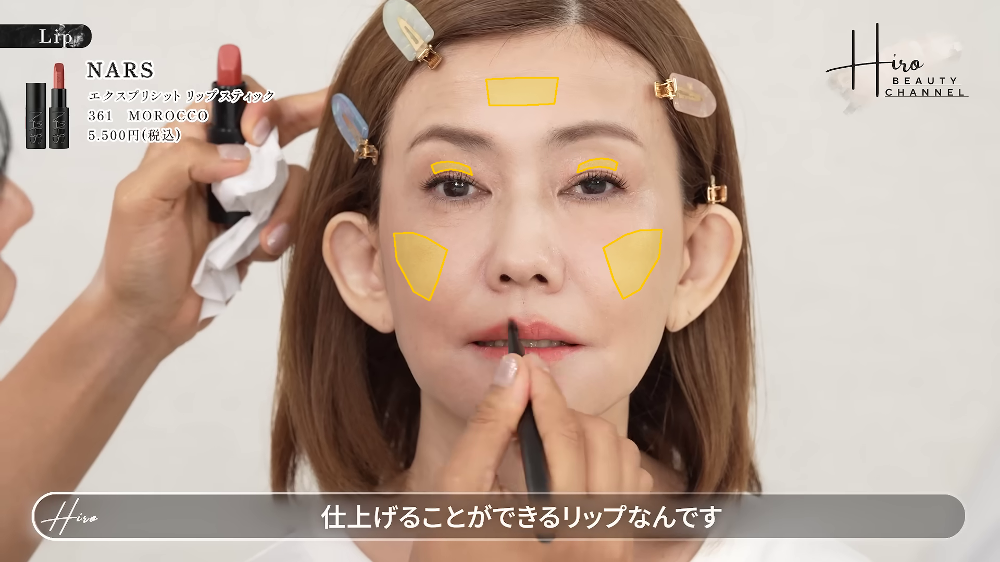
| 指標 | 単位 | before | after | 差 | 状態 |
|---|---|---|---|---|---|
| 画面左眉下の皮膚の細かな質感コントラスト（中央値） | 局所L*比 % | 0.198 | 0.477 | +0.280 | ok |
| 画面左眉下の皮膚の細かな質感コントラスト（p90） | 局所L*比 % | 0.749 | 3.320 | +2.570 | ok |
| 画面右眉下の皮膚の細かな質感コントラスト（中央値） | 局所L*比 % | 0.167 | 0.354 | +0.188 | ok |
| 画面右眉下の皮膚の細かな質感コントラスト（p90） | 局所L*比 % | 0.483 | 1.694 | +1.211 | ok |
| 画面左頬の細かな質感コントラスト（中央値・対照） | 局所L*比 % | 0.140 | 0.185 | +0.045 | ok |
| 画面左頬の細かな質感コントラスト（p90・対照） | 局所L*比 % | 0.363 | 0.562 | +0.200 | ok |
| 画面右頬の細かな質感コントラスト（中央値・対照） | 局所L*比 % | 0.129 | 0.119 | -0.010 | ok |
| 画面右頬の細かな質感コントラスト（p90・対照） | 局所L*比 % | 0.333 | 0.351 | +0.017 | ok |
| 額の細かな質感コントラスト（中央値・対照） | 局所L*比 % | 0.061 | 0.072 | +0.011 | ok |
| 額の細かな質感コントラスト（p90・対照） | 局所L*比 % | 0.224 | 0.250 | +0.025 | ok |
| 画面左眉下の皮膚のSEsc-inspired bright-scaliness率 | % | 0.000 | 0.000 | +0.000 | ok |
| 画面右眉下の皮膚のSEsc-inspired bright-scaliness率 | % | 0.000 | 0.000 | +0.000 | ok |
| 画面左頬・対照のSEsc-inspired bright-scaliness率 | % | 0.000 | 0.000 | +0.000 | ok |
| 画面右頬・対照のSEsc-inspired bright-scaliness率 | % | 0.000 | 0.000 | +0.000 | ok |
| 額・対照のSEsc-inspired bright-scaliness率 | % | 0.000 | 0.000 | +0.000 | ok |
| 画面左眉下の皮膚のGVR-inspired皮膚水分反射比 | ratio | 1.206e-06 | 1.534e-07 | -1.052e-06 | ok |
| 画面右眉下の皮膚のGVR-inspired皮膚水分反射比 | ratio | 3.196e-07 | 1.964e-07 | -1.232e-07 | ok |
| 画面左頬・対照のGVR-inspired皮膚水分反射比 | ratio | 9.570e-07 | 6.652e-07 | -2.918e-07 | ok |
| 画面右頬・対照のGVR-inspired皮膚水分反射比 | ratio | 8.398e-07 | 1.611e-07 | -6.787e-07 | ok |
| 額・対照のGVR-inspired皮膚水分反射比 | ratio | 8.610e-09 | 0.000 | -8.610e-09 | ok |
| 画面左ほうれい線候補の周囲皮膚比・暗さコントラスト（中央値） | 局所L*比 % | 0.000 | 0.000 | +0.000 | ok |
| 画面左ほうれい線候補の周囲皮膚比・暗さコントラスト（p90） | 局所L*比 % | 3.837 | 9.181 | +5.344 | ok |
| 画面右ほうれい線候補の周囲皮膚比・暗さコントラスト（中央値） | 局所L*比 % | 0.000 | 0.000 | +0.000 | ok |
| 画面右ほうれい線候補の周囲皮膚比・暗さコントラスト（p90） | 局所L*比 % | 6.990 | 2.309 | -4.681 | ok |
眉下の皮膚の質感・ほうれい線候補 / rank 17
score 1.7869 ／ before 236.99s → after 1410.99s
顔サイズ比 1.0268 ／ 手の重なり before 0.00% / after 0.00%
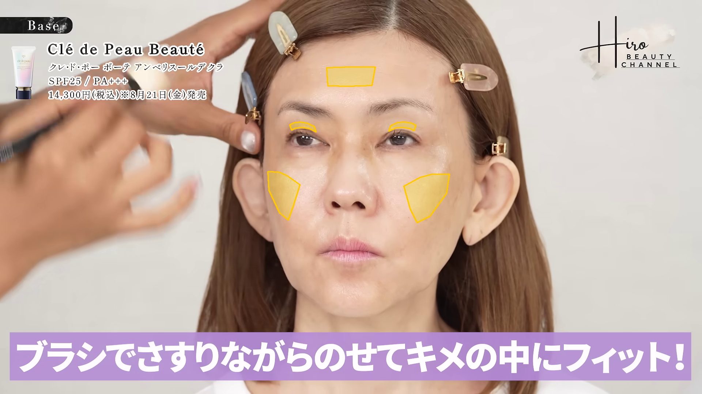

| 指標 | 単位 | before | after | 差 | 状態 |
|---|---|---|---|---|---|
| 画面左眉下の皮膚の細かな質感コントラスト（中央値） | 局所L*比 % | 0.266 | 0.477 | +0.212 | ok |
| 画面左眉下の皮膚の細かな質感コントラスト（p90） | 局所L*比 % | 1.083 | 3.320 | +2.237 | ok |
| 画面右眉下の皮膚の細かな質感コントラスト（中央値） | 局所L*比 % | 0.208 | 0.354 | +0.146 | ok |
| 画面右眉下の皮膚の細かな質感コントラスト（p90） | 局所L*比 % | 0.742 | 1.694 | +0.952 | ok |
| 画面左頬の細かな質感コントラスト（中央値・対照） | 局所L*比 % | 0.208 | 0.185 | -0.023 | ok |
| 画面左頬の細かな質感コントラスト（p90・対照） | 局所L*比 % | 0.611 | 0.562 | -0.049 | ok |
| 画面右頬の細かな質感コントラスト（中央値・対照） | 局所L*比 % | 0.153 | 0.119 | -0.033 | ok |
| 画面右頬の細かな質感コントラスト（p90・対照） | 局所L*比 % | 0.434 | 0.351 | -0.083 | ok |
| 額の細かな質感コントラスト（中央値・対照） | 局所L*比 % | 0.090 | 0.072 | -0.018 | ok |
| 額の細かな質感コントラスト（p90・対照） | 局所L*比 % | 0.403 | 0.250 | -0.153 | ok |
| 画面左眉下の皮膚のSEsc-inspired bright-scaliness率 | % | 0.000 | 0.000 | +0.000 | ok |
| 画面右眉下の皮膚のSEsc-inspired bright-scaliness率 | % | 0.000 | 0.000 | +0.000 | ok |
| 画面左頬・対照のSEsc-inspired bright-scaliness率 | % | 0.000 | 0.000 | +0.000 | ok |
| 画面右頬・対照のSEsc-inspired bright-scaliness率 | % | 0.000 | 0.000 | +0.000 | ok |
| 額・対照のSEsc-inspired bright-scaliness率 | % | 0.000 | 0.000 | +0.000 | ok |
| 画面左眉下の皮膚のGVR-inspired皮膚水分反射比 | ratio | 6.506e-07 | 1.534e-07 | -4.972e-07 | ok |
| 画面右眉下の皮膚のGVR-inspired皮膚水分反射比 | ratio | 1.971e-07 | 1.964e-07 | -6.943e-10 | ok |
| 画面左頬・対照のGVR-inspired皮膚水分反射比 | ratio | 1.137e-06 | 6.652e-07 | -4.723e-07 | ok |
| 画面右頬・対照のGVR-inspired皮膚水分反射比 | ratio | 4.915e-07 | 1.611e-07 | -3.304e-07 | ok |
| 額・対照のGVR-inspired皮膚水分反射比 | ratio | 1.265e-07 | 0.000 | -1.265e-07 | ok |
| 画面左ほうれい線候補の周囲皮膚比・暗さコントラスト（中央値） | 局所L*比 % | 0.000 | 0.000 | +0.000 | ok |
| 画面左ほうれい線候補の周囲皮膚比・暗さコントラスト（p90） | 局所L*比 % | 5.469 | 9.181 | +3.713 | ok |
| 画面右ほうれい線候補の周囲皮膚比・暗さコントラスト（中央値） | 局所L*比 % | 0.000 | 0.000 | +0.000 | ok |
| 画面右ほうれい線候補の周囲皮膚比・暗さコントラスト（p90） | 局所L*比 % | 9.486 | 2.309 | -7.177 | ok |
眉下の皮膚の質感・ほうれい線候補 / rank 18
score 1.7869 ／ before 240.99s → after 1406.99s
顔サイズ比 1.0232 ／ 手の重なり before 0.00% / after 0.00%


| 指標 | 単位 | before | after | 差 | 状態 |
|---|---|---|---|---|---|
| 画面左眉下の皮膚の細かな質感コントラスト（中央値） | 局所L*比 % | 0.201 | 0.382 | +0.181 | ok |
| 画面左眉下の皮膚の細かな質感コントラスト（p90） | 局所L*比 % | 0.783 | 2.319 | +1.536 | ok |
| 画面右眉下の皮膚の細かな質感コントラスト（中央値） | 局所L*比 % | 0.145 | 0.491 | +0.345 | ok |
| 画面右眉下の皮膚の細かな質感コントラスト（p90） | 局所L*比 % | 0.489 | 1.815 | +1.326 | ok |
| 画面左頬の細かな質感コントラスト（中央値・対照） | 局所L*比 % | 0.138 | 0.166 | +0.028 | ok |
| 画面左頬の細かな質感コントラスト（p90・対照） | 局所L*比 % | 0.356 | 0.486 | +0.130 | ok |
| 画面右頬の細かな質感コントラスト（中央値・対照） | 局所L*比 % | 0.120 | 0.125 | +0.005 | ok |
| 画面右頬の細かな質感コントラスト（p90・対照） | 局所L*比 % | 0.316 | 0.350 | +0.035 | ok |
| 額の細かな質感コントラスト（中央値・対照） | 局所L*比 % | 0.048 | 0.042 | -0.006 | ok |
| 額の細かな質感コントラスト（p90・対照） | 局所L*比 % | 0.192 | 0.198 | +0.007 | ok |
| 画面左眉下の皮膚のSEsc-inspired bright-scaliness率 | % | 0.000 | 0.000 | +0.000 | ok |
| 画面右眉下の皮膚のSEsc-inspired bright-scaliness率 | % | 0.000 | 0.000 | +0.000 | ok |
| 画面左頬・対照のSEsc-inspired bright-scaliness率 | % | 0.000 | 0.000 | +0.000 | ok |
| 画面右頬・対照のSEsc-inspired bright-scaliness率 | % | 0.000 | 0.000 | +0.000 | ok |
| 額・対照のSEsc-inspired bright-scaliness率 | % | 0.000 | 0.000 | +0.000 | ok |
| 画面左眉下の皮膚のGVR-inspired皮膚水分反射比 | ratio | 2.851e-07 | 9.629e-09 | -2.755e-07 | ok |
| 画面右眉下の皮膚のGVR-inspired皮膚水分反射比 | ratio | 1.378e-08 | 5.051e-08 | +3.673e-08 | ok |
| 画面左頬・対照のGVR-inspired皮膚水分反射比 | ratio | 1.470e-06 | 6.099e-07 | -8.603e-07 | ok |
| 画面右頬・対照のGVR-inspired皮膚水分反射比 | ratio | 5.976e-07 | 1.837e-07 | -4.140e-07 | ok |
| 額・対照のGVR-inspired皮膚水分反射比 | ratio | 1.993e-07 | 3.724e-09 | -1.955e-07 | ok |
| 画面左ほうれい線候補の周囲皮膚比・暗さコントラスト（中央値） | 局所L*比 % | 0.000 | 0.000 | +0.000 | ok |
| 画面左ほうれい線候補の周囲皮膚比・暗さコントラスト（p90） | 局所L*比 % | 5.067 | 10.206 | +5.139 | ok |
| 画面右ほうれい線候補の周囲皮膚比・暗さコントラスト（中央値） | 局所L*比 % | 0.000 | 0.000 | +0.000 | ok |
| 画面右ほうれい線候補の周囲皮膚比・暗さコントラスト（p90） | 局所L*比 % | 10.190 | 3.083 | -7.107 | ok |
眉下の皮膚の質感・ほうれい線候補 / rank 19
score 1.9075 ／ before 226.02s → after 1404.99s
顔サイズ比 1.0172 ／ 手の重なり before 0.00% / after 0.00%
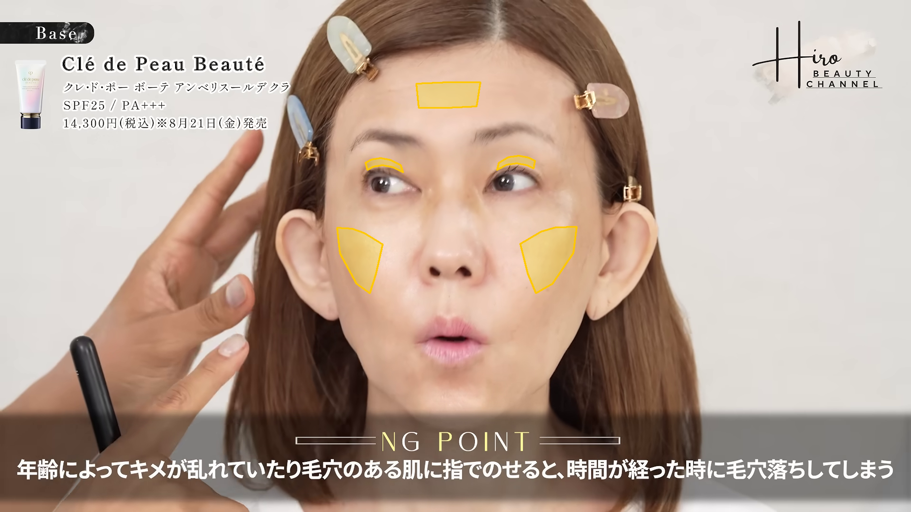
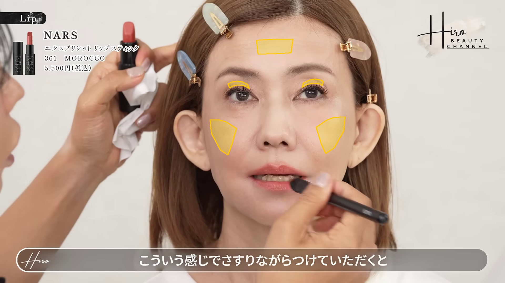
| 指標 | 単位 | before | after | 差 | 状態 |
|---|---|---|---|---|---|
| 画面左眉下の皮膚の細かな質感コントラスト（中央値） | 局所L*比 % | 0.198 | 1.109 | +0.912 | ok |
| 画面左眉下の皮膚の細かな質感コントラスト（p90） | 局所L*比 % | 0.749 | 5.248 | +4.499 | ok |
| 画面右眉下の皮膚の細かな質感コントラスト（中央値） | 局所L*比 % | 0.167 | 0.939 | +0.772 | ok |
| 画面右眉下の皮膚の細かな質感コントラスト（p90） | 局所L*比 % | 0.483 | 4.740 | +4.257 | ok |
| 画面左頬の細かな質感コントラスト（中央値・対照） | 局所L*比 % | 0.140 | 0.170 | +0.030 | ok |
| 画面左頬の細かな質感コントラスト（p90・対照） | 局所L*比 % | 0.363 | 0.461 | +0.098 | ok |
| 画面右頬の細かな質感コントラスト（中央値・対照） | 局所L*比 % | 0.129 | 0.126 | -0.003 | ok |
| 画面右頬の細かな質感コントラスト（p90・対照） | 局所L*比 % | 0.333 | 0.351 | +0.018 | ok |
| 額の細かな質感コントラスト（中央値・対照） | 局所L*比 % | 0.061 | 0.086 | +0.025 | ok |
| 額の細かな質感コントラスト（p90・対照） | 局所L*比 % | 0.224 | 0.316 | +0.091 | ok |
| 画面左眉下の皮膚のSEsc-inspired bright-scaliness率 | % | 0.000 | 0.000 | +0.000 | ok |
| 画面右眉下の皮膚のSEsc-inspired bright-scaliness率 | % | 0.000 | 0.000 | +0.000 | ok |
| 画面左頬・対照のSEsc-inspired bright-scaliness率 | % | 0.000 | 0.000 | +0.000 | ok |
| 画面右頬・対照のSEsc-inspired bright-scaliness率 | % | 0.000 | 0.000 | +0.000 | ok |
| 額・対照のSEsc-inspired bright-scaliness率 | % | 0.000 | 0.000 | +0.000 | ok |
| 画面左眉下の皮膚のGVR-inspired皮膚水分反射比 | ratio | 1.206e-06 | 2.071e-08 | -1.185e-06 | ok |
| 画面右眉下の皮膚のGVR-inspired皮膚水分反射比 | ratio | 3.196e-07 | 6.984e-07 | +3.788e-07 | ok |
| 画面左頬・対照のGVR-inspired皮膚水分反射比 | ratio | 9.570e-07 | 6.772e-07 | -2.798e-07 | ok |
| 画面右頬・対照のGVR-inspired皮膚水分反射比 | ratio | 8.398e-07 | 1.913e-07 | -6.485e-07 | ok |
| 額・対照のGVR-inspired皮膚水分反射比 | ratio | 8.610e-09 | 8.789e-11 | -8.522e-09 | ok |
| 画面左ほうれい線候補の周囲皮膚比・暗さコントラスト（中央値） | 局所L*比 % | 0.000 | 0.000 | +0.000 | ok |
| 画面左ほうれい線候補の周囲皮膚比・暗さコントラスト（p90） | 局所L*比 % | 3.837 | 9.633 | +5.797 | ok |
| 画面右ほうれい線候補の周囲皮膚比・暗さコントラスト（中央値） | 局所L*比 % | 0.000 | 0.000 | +0.000 | ok |
| 画面右ほうれい線候補の周囲皮膚比・暗さコントラスト（p90） | 局所L*比 % | 6.990 | 1.772 | -5.219 | ok |
眉下の皮膚の質感・ほうれい線候補 / rank 20
score 2.0252 ／ before 236.99s → after 1406.99s
顔サイズ比 1.0284 ／ 手の重なり before 0.00% / after 0.00%


| 指標 | 単位 | before | after | 差 | 状態 |
|---|---|---|---|---|---|
| 画面左眉下の皮膚の細かな質感コントラスト（中央値） | 局所L*比 % | 0.266 | 0.382 | +0.116 | ok |
| 画面左眉下の皮膚の細かな質感コントラスト（p90） | 局所L*比 % | 1.083 | 2.319 | +1.236 | ok |
| 画面右眉下の皮膚の細かな質感コントラスト（中央値） | 局所L*比 % | 0.208 | 0.491 | +0.283 | ok |
| 画面右眉下の皮膚の細かな質感コントラスト（p90） | 局所L*比 % | 0.742 | 1.815 | +1.073 | ok |
| 画面左頬の細かな質感コントラスト（中央値・対照） | 局所L*比 % | 0.208 | 0.166 | -0.041 | ok |
| 画面左頬の細かな質感コントラスト（p90・対照） | 局所L*比 % | 0.611 | 0.486 | -0.125 | ok |
| 画面右頬の細かな質感コントラスト（中央値・対照） | 局所L*比 % | 0.153 | 0.125 | -0.028 | ok |
| 画面右頬の細かな質感コントラスト（p90・対照） | 局所L*比 % | 0.434 | 0.350 | -0.084 | ok |
| 額の細かな質感コントラスト（中央値・対照） | 局所L*比 % | 0.090 | 0.042 | -0.047 | ok |
| 額の細かな質感コントラスト（p90・対照） | 局所L*比 % | 0.403 | 0.198 | -0.204 | ok |
| 画面左眉下の皮膚のSEsc-inspired bright-scaliness率 | % | 0.000 | 0.000 | +0.000 | ok |
| 画面右眉下の皮膚のSEsc-inspired bright-scaliness率 | % | 0.000 | 0.000 | +0.000 | ok |
| 画面左頬・対照のSEsc-inspired bright-scaliness率 | % | 0.000 | 0.000 | +0.000 | ok |
| 画面右頬・対照のSEsc-inspired bright-scaliness率 | % | 0.000 | 0.000 | +0.000 | ok |
| 額・対照のSEsc-inspired bright-scaliness率 | % | 0.000 | 0.000 | +0.000 | ok |
| 画面左眉下の皮膚のGVR-inspired皮膚水分反射比 | ratio | 6.506e-07 | 9.629e-09 | -6.410e-07 | ok |
| 画面右眉下の皮膚のGVR-inspired皮膚水分反射比 | ratio | 1.971e-07 | 5.051e-08 | -1.465e-07 | ok |
| 画面左頬・対照のGVR-inspired皮膚水分反射比 | ratio | 1.137e-06 | 6.099e-07 | -5.275e-07 | ok |
| 画面右頬・対照のGVR-inspired皮膚水分反射比 | ratio | 4.915e-07 | 1.837e-07 | -3.079e-07 | ok |
| 額・対照のGVR-inspired皮膚水分反射比 | ratio | 1.265e-07 | 3.724e-09 | -1.228e-07 | ok |
| 画面左ほうれい線候補の周囲皮膚比・暗さコントラスト（中央値） | 局所L*比 % | 0.000 | 0.000 | +0.000 | ok |
| 画面左ほうれい線候補の周囲皮膚比・暗さコントラスト（p90） | 局所L*比 % | 5.469 | 10.206 | +4.737 | ok |
| 画面右ほうれい線候補の周囲皮膚比・暗さコントラスト（中央値） | 局所L*比 % | 0.000 | 0.000 | +0.000 | ok |
| 画面右ほうれい線候補の周囲皮膚比・暗さコントラスト（p90） | 局所L*比 % | 9.486 | 3.083 | -6.403 | ok |